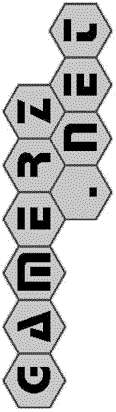

|  |
Help For the Game Of Lyngk
Introduction
Welcome to the network Lyngk server. The rules of Lyngk are described below. The Lyngk challenge command is described here. Other commands are the same for all pbmserv games.
- lyngk challenge [-stack6] userid1 userid2
-
Start a new game between userid1 and userid2
Specify -stack6 for a stack6 game (described below).
Rules
The official rules can be found on the
Lyngk page at boardgamegeek.com.What follows is a quick rules summary along with notes on notation. The board is shown here with a sample random initial setup:
A B C D E F G H I
1 4 7 6 7 6 7 4 1
I G J
G B
R R I
R K K R
I G I
G B R K
G B R K B
B B B I
R I I
B K G K
J G J
K R
K G I
A B C D E F G H I
1 1 1 1 1 1 1 1 1
Columns are labeled with letters A-I and within each column the intersections are numbered consecutively from 1 to the number of intersections in that column. Intersections are denoted by a letter and number (e.g., "a1").
Initially, each intersection contains a random marker with colors one of: (Ivory, Blue, Red, Green, blacK, or Joker) abbreviated by the capitalized letter. There are eight pieces for each of the five main colors as well as three joker pieces (in the physical set, jokers are white with black dots). Jokers have special rules described below.
A move consists of moving a stack from one intersection to another, e.g., b1-b2 moves the stack at b1 to top of the stack at b2. Optionally, one can claim one of the five main colors before making a move; R,b1-b2 claims the color red before making the same stacks. A player can claim up to two colors in the course of the game with the result that at least one color will always remain unclaimed/neutral.
The resultant stack must not repeat colors and in the normal game once a stack reaches a height of five (one of each main color), it is removed from the board if the top marker has a color claimed by the current player. The goal of the game is to accumulate stacks of one’s color.
Stacks are moved as a unit and can only be moved to an already occupied intersection within a straight line (the "Lyngk rule" described below provides an exception to this rule). If there is empty space next to a stack it can move until it hits an occupied intersection. Jokers in a stack can stand in for any of the five main colors. A stack can have more than one joker each of which is then assumed to represent a missing color up to a limit of five markers. A stack consisting of a single joker cannot be moved.
There are additional restrictions depending on whether the top marker of a stack has been claimed by the current player, the opponent or is neutral. A player cannot move a stack topped by a marker of a color claimed by their opponent. If a stack being moved is headed by a neutral marker, the stack must be moved onto a stack of height less than or equal to the height of the stack being moved. If a stack is headed by a marker of a color you have claimed, the height restrictions do not apply: a stack can be moved onto any other stack provided that the height is five or less and colors are not duplicated.
In addition to moving stacks in straight lines, another possibility for a stack headed by a marker of a color you have claimed is to make a lyngk move. If there is a stack within an unobstructed line headed by a piece of the same color, you can proceed to any intersection that could be reached from that stack (bouncing off that intersection) and this rule can be applied multiple times, i.e., you can make more than one bounce. In the following board position, assuming that player 1 has claimed the color blue, they can move the stack from b4 to e2 via blue stacks at b1 and c3.
A B C D E F G H I
1 4 7 6 7 6 7 4 1
- G G
KJ R
I B K
B G R B
KG R G
- J K G
G - G I B
- RK K R
BI I R
BJ - I B
K KI R
R -
I B I
A B C D E F G H I
1 1 1 1 1 1 1 1 1
If a player finds that they cannot make any legal move, they are forced to pass. Note that if a player has not claimed both of their colors, and by claiming a color they would be able to move, they must do so; voluntary passing is not allowed. If neither player can move, the game is over and the winner is the player who has removed the most stacks of five. If both players have the same number of stacks of five, the player who has the most stacks of four headed by markers of colors they have claimed and if that is still tied, stacks of three, etc. If this procedure does not break the tie, the game is a draw.
In stack6 mode, additional rules are added. Stacks of height five are not removed from the board. Players are allowed to make a stack of six provided the stack contains at least one joker. That joker is considered to represent a sixth color (note the stack could have other jokers taking the place of any of the other five colors). A player who forms a stack of six with one of his markers on top wins immediately. A stack of six with a neutral piece on top does not end the game. Otherwise, the game proceeds as normal.
References and History
Lyngk is the seventh game in Kris Burm's Project Gipf and the inventor describes it as an umbrella containing elements of all the previous games. It has been adapted for Richard's PBEM server by Lyman Hurd.